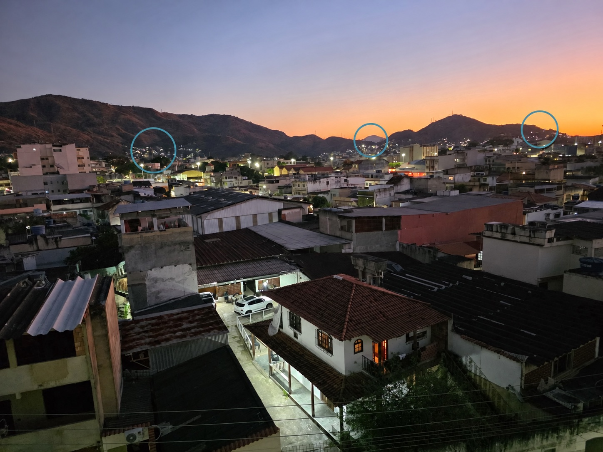
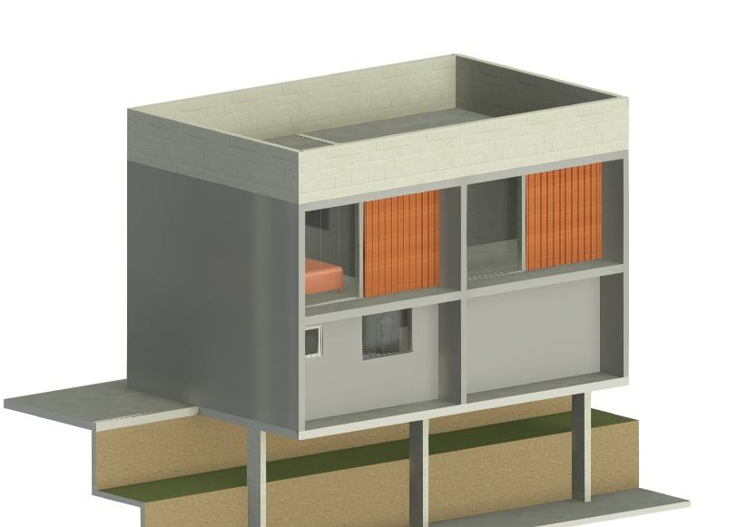
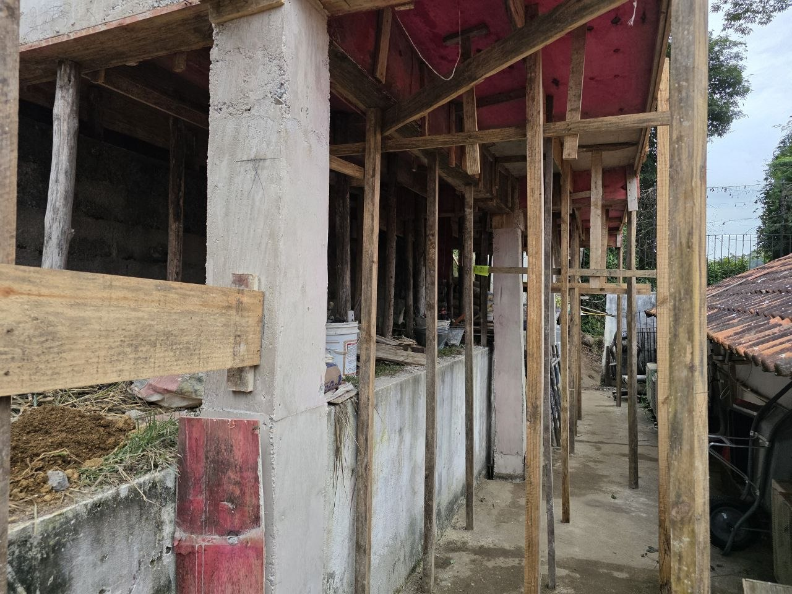
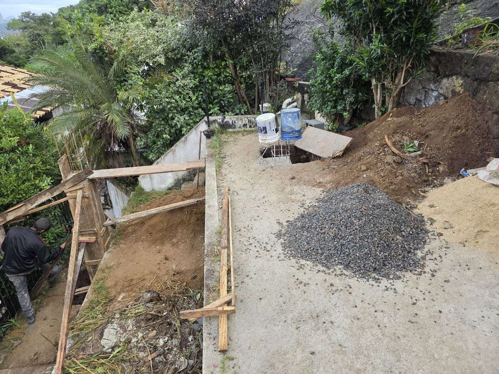
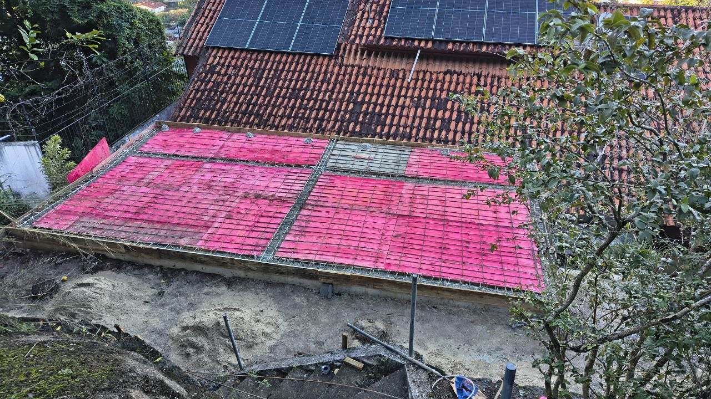
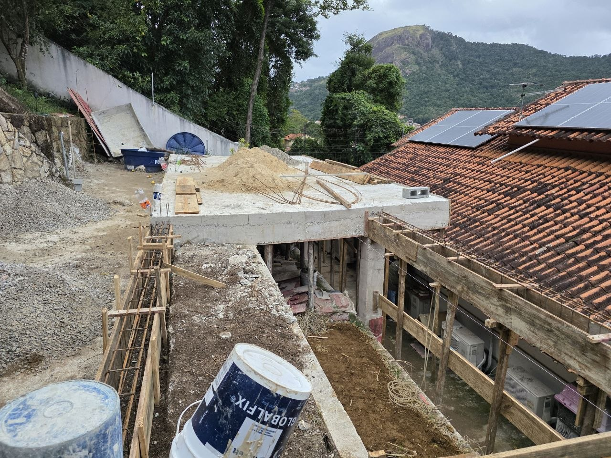
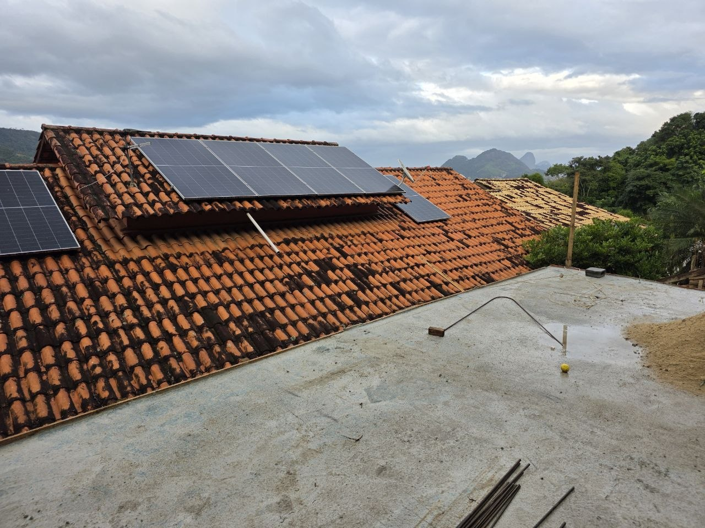

Onde a IMOBX está agora e o que vem depois
Ter a própria casa é uma das necessidades mais profundas que existem, e para muitas famílias do Rio ela continua fora de alcance.
Com a crise da moradia no Rio, as favelas nos morros crescem rápido.

Estamos preparando o primeiro projeto no Rio de Janeiro. Vamos marcar as datas quando tivermos escolhido que tipo de organização a IMOBX vai ser e confirmado o primeiro imóvel.
Da preparação às primeiras casas
Hoje estamos trabalhando em quatro coisas ao mesmo tempo, todas preparando as primeiras casas.
Estamos aquiAgora: em preparação
A organização e os papéis do imóvel
Estamos decidindo que tipo de organização a IMOBX vai ser, como uma cooperativa ou uma empresa. Também estamos organizando os papéis do imóvel, transformando a estimativa do Rafael num orçamento de obra em reais e escrevendo os termos que uma família assina para alugar uma casa e depois comprá-la.
Os moradores vão ajudar a escrever as regras
Os futuros moradores vão ajudar a escrever as regras da casa, e uma regra só começa depois que eles opinarem.
Um pagamento de teste, antes dos de verdade
Antes de gastar os recursos de alguém, planejamos fazer um pequeno pagamento de teste e conferir duas coisas: quem o aprovou e se o nosso registro bate com o extrato do banco, para sabermos que a conferência funciona antes de passar valores de verdade.
Planejar uma reserva
Planejamos guardar uma reserva para as contas e para o que prometemos às famílias, para que um mês fraco não pare a obra. Se a reserva ficar baixa, gastos novos esperam até ela se recompor.
Depois disso
1. Primeiras casas
Começa quando houver recursos e licençasMostrar detalhesEsconder detalhesComeçamos pequeno: um piloto no apartamento do Rafael em Guadalupe, se ele for confirmado como o primeiro imóvel, para testar os termos do aluguel com compra antes de construir algo novo. Depois vêm as primeiras casas novas, com a empresa do Rafael como construtora proposta. Um fiscal independente confere a obra, e as famílias se mudam quando as casas estiverem seguras e os contratos assinados.
O piloto começa com uma conversa com a família: do que ela precisa, quanto ganha e quão perto mora de transporte, escola e serviços.
Depois dos primeiros meses, vemos quanto as casas custam de verdade para manter e se os reparos são feitos rápido e bem.
2. Mais bairros
Depois de avaliar as primeiras casasMostrar detalhesEsconder detalhesSó abrimos mais bairros quando as primeiras famílias estiverem instaladas, as casas tiverem se mostrado sólidas e tivermos pago tudo o que prometemos a elas. Os custos e pagamentos das primeiras casas continuam públicos, para que um novo apoiador, ou alguém com um imóvel que possa entrar, veja o registro antes de decidir. Cada novo bairro usaria os mesmos projetos e compraria materiais junto com os outros, e os moradores decidem o que afeta só a eles.
3. Abrir a IMOBX para outros proprietários
Depois que as primeiras etapas mostrarem resultadosMostrar detalhesEsconder detalhesMais tarde, quem já tem uma casa poderia vendê-la a uma família pelo aluguel com compra, ou abri-la como moradia compartilhada. Antes de confiar uma casa a alguém, o proprietário vai querer garantias e seguro, e a IMOBX pode oferecer isso quando já tiver histórico.
O token da IMOBX
A IMOBX planeja um token self-compounding de financiamento comunitário para uma etapa posterior. Ter o token é opcional. As taxas de negociação deverão ajudar a financiar o trabalho da comunidade.
Na proposta, as famílias se associam a uma cooperativa de moradia e assinam seus próprios contratos de moradia. Elas não precisam comprar nem ter tokens.
Nas regras propostas, votos sobre o token não alterariam o contrato de moradia de uma família. O contrato planejado exigiria que a família e a IMOBX assinassem as mudanças, sujeito à lei brasileira.
Onde a primeira família vai morar?
O mais provável é um apartamento em Guadalupe que o Rafael, um dos nossos fundadores, construiu e que é dele.
Hoje uma família mora lá de aluguel, e o plano é testar ali primeiro os termos do aluguel com compra.
Um imóvel pode entrar quando três coisas estiverem no papel: de quem é o imóvel, um acordo escrito com a IMOBX e o consentimento da família.
| Imóvel | O que temos | Situação |
|---|---|---|
| O apartamento de Rafael em Guadalupe | Um apartamento pronto, onde uma família mora de aluguel | Candidato |
| Dois lofts | Um contrato de obra de janeiro de 2026 | Obra própria do Rafael, mostrada como exemplo |
| Vila de pelo menos 36 casas | Orçamento do Rafael, 30 de novembro de 2025 | Conceito; depende de terreno, recursos e escala |
Como poderia ser a primeira vila?
Rafael planejou a primeira vila com casas de 45 m² em volta de um pátio comum, com energia solar, um pomar e lugares para brincar e estudar.

O que a construtora do Rafael está construindo?
Em janeiro de 2026, a construtora do Rafael assinou um contrato para construir dois lofts. É uma obra própria da construtora, com projetos e agenda dela. Os lofts são o tipo de casa que a IMOBX quer construir, e as fotos abaixo mostram como a equipe do Rafael trabalha.


Escoras de madeira seguram a laje entre os pilares de concreto. 
Brita e areia prontas ao lado de uma laje nova de concreto. 
Malha de aço montada na laje antes da concretagem. 
Armação de ferro da fundação na vala, ao lado da laje pronta. 
A nova laje de cobertura ao lado de um telhado com painéis solares.
Fotos da obra, do nosso arquivo. Todas as fotos e desenhos dos lofts
Quem decide em cada etapa, e o que estamos decidindo agora: Governança local.
O que está decidido, e o que ainda não
Se você pensa em participar, apoiar com recursos ou trazer um imóvel, é com isto que você pode contar hoje.
Onde a IMOBX está hoje
- A IMOBX ainda está em preparação, então ainda não há casas para alugar ou comprar.
- Ainda não escolhemos que tipo de organização a IMOBX vai ser.
- A IMOBX ainda não assinou nenhum contrato.
- Nenhuma autoridade pública aprovou ainda os planos da IMOBX.
Casas e famílias
- O preço, o valor mensal, o prazo e quem pode participar são definidos para cada projeto, num contrato escrito, antes de qualquer mudança.
- Tudo o que uma família recebe como promessa, como uma devolução, mais prazo para pagar ou um desconto, vale quando estiver escrito no contrato assinado.
Recursos
- O plano é que os recursos venham de doações e editais, e de investimento se a organização que escolhermos puder aceitar.
- Veja como os recursos seriam gastos em Custos e recursos.
- Qualquer investimento só seria oferecido de um jeito que a lei brasileira permite, com os direitos do investidor por escrito e sem retorno prometido.
- Só começamos a construir quando os recursos para isso estiverem no banco.
Leis
- Três conjuntos de regras brasileiras definem como a IMOBX é montada: o cadastro na Receita Federal; o Código Civil, que decide o momento em que uma casa passa legalmente a ser da família; e a Lei 13.019, que vale se a IMOBX trabalhar com um órgão público, como a prefeitura.
Vamos resolver as perguntas em aberto, como o tipo de organização que a IMOBX vai ser e o primeiro imóvel, com as pessoas que participarem. Se você pode ajudar com uma delas, apresente-se.
Apresente-se